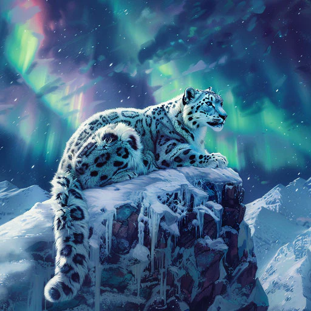

Tengo algo que decirte
Amo a los gatos y al cuidar de ellos pensé en los gatos mayores, los felinos que viven en las selvas, montañas y los bosques. Me di cuenta de que lamentablemente algunos estan en peligro de extinción.
Investigué cómo es que eso ha sucedido. La caza, la tala de árboles, contaminación entre otras razones estan acabando con los hábitat y las especies.
Debemos hacer algo para cuidar la biodersidad. Cree esta página para promober y apoyar estas causas ¿Quieres sumarte? Busco ideas y voluntarios para ser parte de Felinos En Acción 
Página creada por Lara Grettel, Agosto 2025